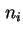
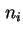
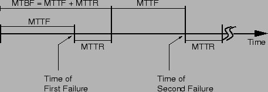

Next: การคุ้มครองจากการเสียหาย (Fault Coverage)
Up: การประเมินค่าความน่าเชื่อถือเชิงปริมาณ
Previous: เวลาเฉลี่ยในการซ่อมแซม (MTTR)
Contents
Index
การศึกษาการวัดประสิทธิภาพของระบบจำเป็นต้องเข้าใจความแตกต่างระหว่าง MTTF และ ``เวลาเฉลี่ยระหว่างการเสียหาย'' Mean Time between Failure (MTBF) บางครั้งนิยามทั้งสองถูกใช้แทนกัน เนื่องจากมีค่าต่างกันน้อยมาก แต่ความหมายทางด้านแนวคิดของทั้งสองวิธีมีความแตกต่างกัน. MTTF คือค่าเฉลี่ยของเวลาก่อนการเกิดการเสียหายครั้งแรก ซึ่งเราประมาณจากการใช้ประชากรของระบบที่เหมือนกัน  ตัว เรื่มทำงานพร้อมกันที่เวลา
ตัว เรื่มทำงานพร้อมกันที่เวลา  และทำการวัดค่าเวลาที่ระบบเสียครั้งแรก เพื่อทำการหาค่าเฉลี่ยโดยการหารด้วย ค่า MTBF เป็นการคำนวณค่าเฉลี่ยของเวลาระหว่างการเสียหาย ซึ่งรวมเวลาที่จะซ่อมระบบในกรณีที่เกิดการเสียหาย และเวลาที่นำระบบกลับมาใช้อีก หรืออีกนัยหนึ่ง ในแต่ละระบบของ ระบบ ที่ทำงานมาเป็นเวลา
และทำการวัดค่าเวลาที่ระบบเสียครั้งแรก เพื่อทำการหาค่าเฉลี่ยโดยการหารด้วย ค่า MTBF เป็นการคำนวณค่าเฉลี่ยของเวลาระหว่างการเสียหาย ซึ่งรวมเวลาที่จะซ่อมระบบในกรณีที่เกิดการเสียหาย และเวลาที่นำระบบกลับมาใช้อีก หรืออีกนัยหนึ่ง ในแต่ละระบบของ ระบบ ที่ทำงานมาเป็นเวลา  และจำนวนที่เกิดการเสียหายกับระบบ
และจำนวนที่เกิดการเสียหายกับระบบ  บันทึกมาเป็นค่า  ค่าเฉลี่ยของจำนวนเสียหายสามารถคำนวณจาก
บันทึกมาเป็นค่า  ค่าเฉลี่ยของจำนวนเสียหายสามารถคำนวณจาก
และจะได้ค่า MTBF เท่ากับ
ค่า MTBF คือค่าเวลาทั้งหมด หารด้วยจำนวนครั้งที่เกิดความเสียหาย ในระบบที่พบในช่วงเวลา
สมมุติว่าระบบมีคุณภาพการทำงานเหมือนใหม่หลังการซ่อมแซม ความสัมพันธ์ระหว่าง
MTTF และ MTTR สามารถแสดงโดยรูป 10.2 หลังจากเริ่มทำงาน, โดยเฉลี่ยระบบจะทำงานเป็นระยะเวลา MTTF ก่อนการเสียครั้งแรก จากนั้นก็ทำการซ่อมโดยใช้เวลา MTTR เพื่อที่จะซ่อมความเสียหาย และ นำระบบกลับมาใช้ใหม่อีกครั้งหนึ่ง หลังจากการซ่อมระบบสมบูรณ์เหมือนใหม่อีกครั้งหนึ่ง และจะสามารถทำงานได้เฉลี่ยเท่ากับ MTTF ก่อนการเสียหายครั้งต่อไป เพราะฉะนั้น ค่า MTBF คือผลรวมของ MTTF และ MTTR ดังสมการดังต่อไปนี้
Figure 10.2:
ความสัมพันธ์ระหว่าง
MTTF และ MTTR โดยสมมุติว่าระบบมีคุณภาพการทำงานเสมือนใหม่หลังการซ่อมแซม
|

|
Vara Varavithya
2002-03-09